Sử dụng TileMap
Xem thêm
Trang này giả định rằng bạn đã tạo hoặc tải xuống một TileSet. Nếu chưa, hãy đọc Sử dụng TileSet trước, vì bạn sẽ cần một TileSet để tạo TileMap.
Giới thiệu
Tilemap là một lưới các ô (tile) dùng để tạo bố cục của game. Có nhiều lợi ích khi dùng node TileMapLayer để thiết kế màn chơi. Thứ nhất, chúng cho phép vẽ bố cục bằng cách "tô" các tile lên lưới, nhanh hơn nhiều so với việc đặt từng node Sprite2D một. Thứ hai, chúng cho phép tạo màn chơi lớn hơn nhiều vì được tối ưu để vẽ số lượng lớn tile. Cuối cùng, bạn có thể thêm các hình va chạm, che khuất (occlusion) và điều hướng (navigation) cho tile, giúp TileMap có thêm nhiều chức năng.
Chỉ định TileSet trong TileMapLayer
Nếu bạn đã làm theo trang trước về Sử dụng TileSet, bạn sẽ có một resource TileSet được tích hợp sẵn trong node TileMapLayer. Cách này phù hợp để làm prototype, nhưng trong một dự án thực tế, bạn thường sẽ có nhiều màn chơi dùng lại cùng một tileset.
Cách được khuyến nghị để dùng lại cùng một TileSet trong nhiều node TileMapLayer là lưu TileSet thành một resource bên ngoài. Để làm vậy, hãy nhấp vào danh sách thả xuống cạnh resource TileSet và chọn Save:
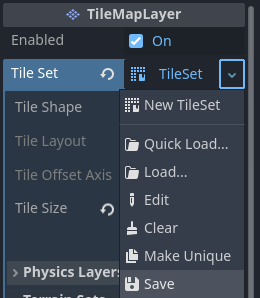
Lưu resource TileSet tích hợp sẵn thành một tệp resource bên ngoài
Nhiều TileMapLayer và cài đặt
Khi làm việc với tilemap, bạn thường được khuyên nên dùng nhiều node TileMapLayer khi phù hợp. Dùng nhiều layer có thể mang lại lợi ích, ví dụ như cho phép bạn phân biệt tile tiền cảnh với tile hậu cảnh để tổ chức tốt hơn. Bạn có thể đặt một tile cho mỗi layer tại một vị trí nhất định, nhờ đó có thể chồng nhiều tile lên nhau nếu bạn có nhiều hơn một layer.
Mỗi node TileMapLayer có một số thuộc tính bạn có thể điều chỉnh:
Enabled: Nếu
true, layer sẽ hiển thị trong trình chỉnh sửa và khi chạy dự án.TileSet Tileset được node TileMapLayer sử dụng.
Kết xuất
Y Sort Origin: Độ lệch theo chiều dọc dùng cho việc sắp xếp theo Y trên mỗi tile (tính bằng pixel). Chỉ có hiệu lực nếu Y Sort Enabled trong phần cài đặt CanvasItem là
true.X Draw Order Reversed Đảo ngược thứ tự vẽ các tile theo trục X. Yêu cầu Y Sort Enabled trong phần cài đặt CanvasItem là
true.Rendering Quadrant Size Quadrant là một nhóm tile được vẽ cùng nhau trên một CanvasItem duy nhất nhằm mục đích tối ưu hóa. Cài đặt này xác định độ dài cạnh của một hình vuông trong hệ tọa độ của map. Kích thước quadrant không áp dụng cho TileMapLayer có sắp xếp theo Y, vì khi đó các tile được nhóm theo vị trí Y.
Vật lý
Collision Enabled Bật hoặc tắt va chạm.
Use Kinematic Bodies Khi bật, các collision shape của TileMapLayer sẽ được tạo instance dưới dạng kinematic body.
Collision Visibility Mode Có hiển thị các collision shape của TileMapLayer hay không. Nếu đặt là mặc định, nó sẽ phụ thuộc vào cài đặt gỡ lỗi hiển thị va chạm.
Sắp xếp lại các layer
Bạn có thể sắp xếp lại các layer bằng cách kéo thả node của chúng trong tab Scene. Bạn cũng có thể chuyển đổi node TileMapLayer đang làm việc bằng các nút ở góc trên bên phải của trình chỉnh sửa TileMap.
Ghi chú
Bạn có thể tạo, đổi tên hoặc sắp xếp lại các layer sau này mà không ảnh hưởng đến các tile hiện có. Tuy nhiên hãy cẩn thận, vì xóa một layer cũng sẽ xóa toàn bộ tile đã được đặt trên layer đó.
Mở trình chỉnh sửa TileMap
Chọn node TileMapLayer, sau đó mở bảng TileMap ở cuối trình chỉnh sửa:
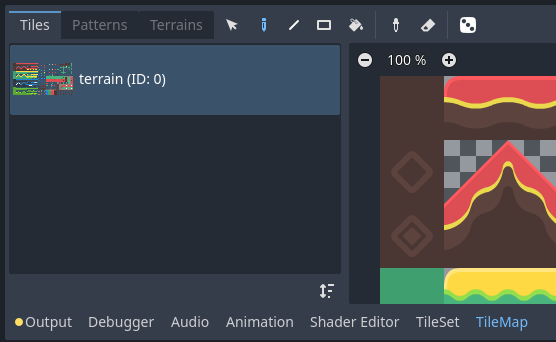
Mở bảng TileMap ở cuối trình chỉnh sửa. Bạn phải chọn node TileMapLayer trước.
Chọn tile dùng để vẽ
Trước tiên, nếu bạn đã tạo thêm layer ở bước trên, hãy đảm bảo bạn đã chọn layer muốn vẽ lên:
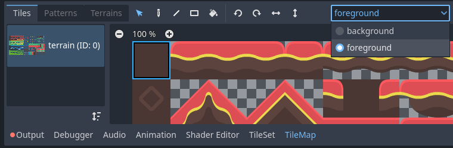
Chọn một layer để vẽ trong trình chỉnh sửa TileMap
Mẹo
Trong trình chỉnh sửa 2D, các layer của cùng node TileMapLayer mà bạn hiện không chỉnh sửa sẽ hiển thị mờ xám khi đang ở trình chỉnh sửa TileMap. Bạn có thể tắt hành vi này bằng cách nhấp vào biểu tượng cạnh menu chọn layer (tooltip Highlight Selected TileMap Layer).
Bạn có thể bỏ qua bước trên nếu chưa tạo thêm layer, vì layer đầu tiên sẽ được tự động chọn khi vào trình chỉnh sửa TileMap.
Trước khi có thể đặt tile trong trình chỉnh sửa 2D, bạn phải chọn một hoặc nhiều tile trong bảng TileMap ở cuối trình chỉnh sửa. Để làm vậy, hãy nhấp vào một tile trong bảng TileMap, hoặc giữ chuột để chọn nhiều tile:
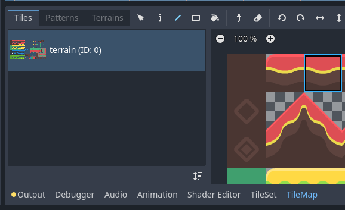
Chọn một tile trong trình chỉnh sửa TileMap bằng cách nhấp vào nó
Mẹo
Giống như trong trình chỉnh sửa 2D và TileSet, bạn có thể di chuyển khung nhìn trong bảng TileMap bằng chuột giữa hoặc chuột phải, và thu phóng bằng con lăn chuột hoặc các nút ở góc trên bên trái.
Bạn cũng có thể giữ Shift để thêm vào vùng chọn hiện tại. Khi chọn nhiều hơn một tile, nhiều tile sẽ được đặt mỗi lần bạn thực hiện thao tác vẽ. Điều này có thể dùng để vẽ các cấu trúc gồm nhiều tile chỉ với một cú nhấp (chẳng hạn như các nền lớn hoặc cây).
Vùng chọn cuối cùng không nhất thiết phải liền kề: nếu có khoảng trống giữa các tile được chọn, khoảng đó sẽ được để trống trong mẫu được vẽ trong trình chỉnh sửa 2D.
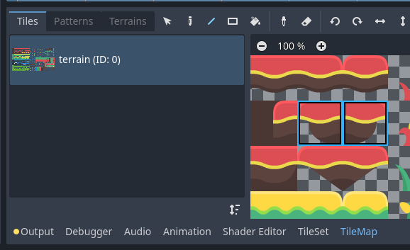
Chọn nhiều tile trong trình chỉnh sửa TileMap bằng cách giữ chuột trái
Nếu bạn đã tạo các alternative tile trong TileSet, bạn có thể chọn chúng để vẽ ở bên phải các tile gốc:
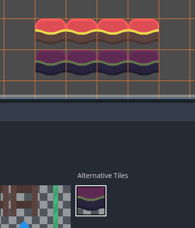
Chọn một tile thay thế trong trình chỉnh sửa TileMap
Cuối cùng, nếu bạn đã tạo một scenes collection trong TileSet, bạn có thể đặt các scene tile vào TileMap:
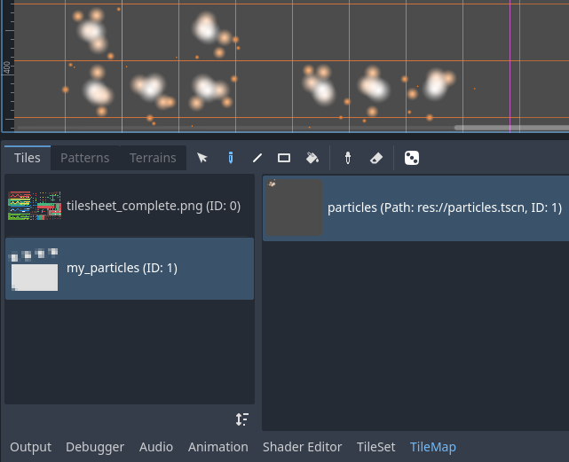
Đặt một scene tile chứa hạt (particles) bằng trình chỉnh sửa TileMap
Các chế độ và công cụ vẽ
Với thanh công cụ ở đầu trình chỉnh sửa TileMap, bạn có thể chọn giữa nhiều chế độ vẽ và công cụ. Các chế độ này ảnh hưởng đến thao tác khi nhấp trong trình chỉnh sửa 2D, không phải trong chính bảng TileMap.
Từ trái sang phải, các chế độ vẽ và công cụ bạn có thể chọn là:
Chọn
Chọn tile bằng cách nhấp vào một tile, hoặc giữ chuột trái để chọn nhiều tile bằng một hình chữ nhật trong trình chỉnh sửa 2D. Lưu ý rằng không thể chọn khoảng trống: nếu bạn tạo vùng chọn hình chữ nhật, chỉ các tile không trống mới được chọn.
Để thêm vào vùng chọn hiện tại, hãy giữ Shift rồi chọn một tile. Để bỏ khỏi vùng chọn hiện tại, hãy giữ Ctrl rồi chọn một tile.
Sau đó, vùng chọn có thể được dùng trong bất kỳ chế độ vẽ nào khác để nhanh chóng tạo bản sao của một mẫu đã được đặt.
Bạn có thể xóa các tile được chọn khỏi TileMap bằng cách nhấn Del.
Bạn có thể tạm thời bật chế độ này khi đang ở chế độ Paint bằng cách giữ Ctrl rồi thực hiện chọn.
Mẹo
Bạn có thể sao chép và dán các tile đã đặt bằng cách thực hiện chọn, nhấn Ctrl + C rồi nhấn Ctrl + V. Vùng chọn sẽ được dán sau khi bạn nhấp chuột trái. Bạn có thể nhấn Ctrl + V thêm lần nữa để dán thêm theo cách này. Nhấp chuột phải hoặc nhấn Escape để hủy dán.
Vẽ
Chế độ Paint tiêu chuẩn cho phép bạn đặt tile bằng cách nhấp hoặc giữ chuột trái.
Nếu bạn nhấp chuột phải, tile đang được chọn sẽ bị xóa khỏi tilemap. Nói cách khác, nó sẽ được thay bằng khoảng trống.
Nếu bạn đã chọn nhiều tile trong TileMap hoặc bằng công cụ Selection, chúng sẽ được đặt mỗi khi bạn nhấp hoặc kéo chuột trong khi giữ chuột trái.
Mẹo
Khi ở chế độ Paint, bạn có thể vẽ một đường thẳng bằng cách giữ Shift trước khi giữ chuột trái, rồi kéo chuột đến điểm cuối của đường. Thao tác này giống hệt việc dùng công cụ Line được mô tả bên dưới.
Bạn cũng có thể vẽ một hình chữ nhật bằng cách giữ Ctrl và Shift trước khi giữ chuột trái, rồi kéo chuột đến điểm cuối của hình chữ nhật. Thao tác này giống hệt việc dùng công cụ Rectangle được mô tả bên dưới.
Cuối cùng, bạn có thể lấy các tile có sẵn trong trình chỉnh sửa 2D bằng cách giữ Ctrl rồi nhấp vào một tile (hoặc giữ và kéo chuột). Thao tác này sẽ chuyển (các) tile đang vẽ thành (các) tile bạn vừa nhấp. Thao tác này giống hệt việc dùng công cụ Picker được mô tả bên dưới.
Line
Sau khi chọn chế độ Line Paint, bạn có thể vẽ một đường luôn dày đúng 1 tile (bất kể hướng của nó).
Nếu bạn nhấp chuột phải khi đang ở chế độ Line Paint, bạn sẽ xóa theo một đường thẳng.
Nếu bạn đã chọn nhiều tile trong TileMap hoặc bằng công cụ Selection, bạn có thể đặt chúng theo mẫu lặp lại dọc theo đường thẳng.
Bạn có thể tạm thời bật chế độ này khi đang ở chế độ Paint hoặc Eraser bằng cách giữ Shift rồi vẽ.
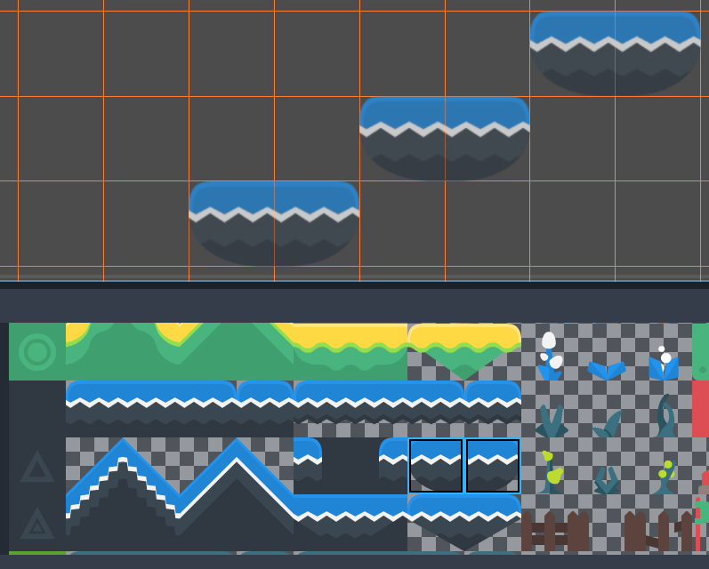
Dùng công cụ Line sau khi chọn hai tile để vẽ các nền theo đường chéo
Rectangle
Sau khi chọn chế độ Rectangle Paint, bạn có thể vẽ một hình chữ nhật thẳng hàng với các trục.
Nếu bạn nhấp chuột phải khi đang ở chế độ Rectangle Paint, bạn sẽ xóa theo một hình chữ nhật thẳng hàng với các trục.
Nếu bạn đã chọn nhiều tile trong TileMap hoặc bằng công cụ Selection, bạn có thể đặt chúng theo mẫu lặp lại bên trong hình chữ nhật.
Bạn có thể tạm thời bật chế độ này khi đang ở chế độ Paint hoặc Eraser bằng cách giữ Ctrl và Shift rồi vẽ.
Bucket Fill
Sau khi chọn chế độ Bucket Fill, bạn có thể chọn có giới hạn việc vẽ chỉ trong các vùng liền kề hay không bằng cách bật/tắt ô Contiguous xuất hiện ở bên phải thanh công cụ.
Nếu bạn bật Contiguous (mặc định), chỉ những tile khớp và tiếp giáp với vùng chọn hiện tại mới bị thay thế. Việc kiểm tra liền kề này được thực hiện theo chiều ngang và chiều dọc, nhưng không theo đường chéo.
Nếu bạn tắt Contiguous, tất cả tile có cùng ID trong toàn bộ TileMap sẽ bị thay bằng tile đang được chọn. Nếu chọn một tile trống khi Contiguous bị bỏ chọn, thay vào đó tất cả tile trong hình chữ nhật bao quanh vùng hiệu dụng của TileMap sẽ bị thay thế.
Nếu bạn nhấp chuột phải khi đang ở chế độ Bucket Fill, bạn sẽ thay các tile khớp bằng tile trống.
Nếu bạn đã chọn nhiều tile trong TileMap hoặc bằng công cụ Selection, bạn có thể đặt chúng theo mẫu lặp lại bên trong vùng được tô.
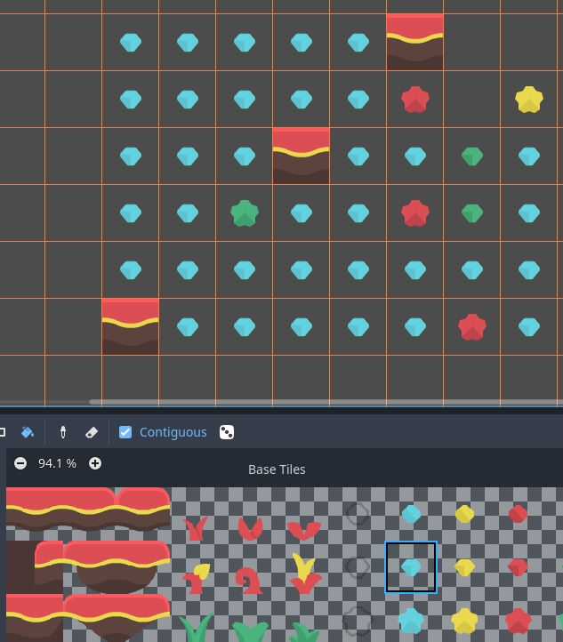
Sử dụng công cụ Bucket Fill
Công cụ lấy mẫu (Picker)
Sau khi chọn chế độ Picker, bạn có thể lấy các tile có sẵn trong trình chỉnh sửa 2D bằng cách giữ Ctrl rồi nhấp vào một tile. Thao tác này sẽ chuyển tile đang vẽ thành tile bạn vừa nhấp. Bạn cũng có thể lấy nhiều tile cùng lúc bằng cách giữ chuột trái và tạo vùng chọn hình chữ nhật. Chỉ có thể lấy các tile không trống.
Bạn có thể tạm thời bật chế độ này khi đang ở chế độ Paint bằng cách giữ Ctrl rồi nhấp hoặc kéo chuột.
Eraser
Chế độ này được kết hợp với bất kỳ chế độ vẽ nào khác (Paint, Line, Rectangle, Bucket Fill). Khi bật chế độ eraser, các tile sẽ được thay bằng tile trống thay vì vẽ đường mới khi nhấp chuột trái.
Bạn có thể tạm thời bật chế độ này khi đang ở bất kỳ chế độ nào khác bằng cách nhấp chuột phải thay vì chuột trái.
Vẽ ngẫu nhiên bằng tính năng rải (scattering)
Khi vẽ, bạn có thể tùy chọn bật ngẫu nhiên hóa. Khi bật, một tile ngẫu nhiên sẽ được chọn trong số tất cả tile đang được chọn khi vẽ. Tính năng này được hỗ trợ với các công cụ Paint, Line, Rectangle và Bucket Fill. Để ngẫu nhiên hóa việc vẽ hiệu quả, bạn phải chọn nhiều tile trong trình chỉnh sửa TileMap hoặc dùng scattering (có thể kết hợp cả hai cách).
Nếu Scattering được đặt thành giá trị lớn hơn 0, sẽ có khả năng không có tile nào được đặt khi vẽ. Điều này có thể dùng để thêm chi tiết thỉnh thoảng, không lặp lại vào các vùng rộng (chẳng hạn như thêm cỏ hoặc mảnh vụn trên một TileMap góc nhìn từ trên xuống cỡ lớn).
Ví dụ khi dùng chế độ Paint:
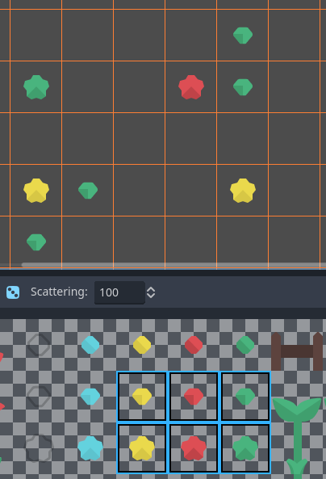
Chọn nhiều tile để chọn ngẫu nhiên, rồi vẽ bằng cách giữ chuột trái
Ví dụ khi dùng chế độ Bucket Fill:
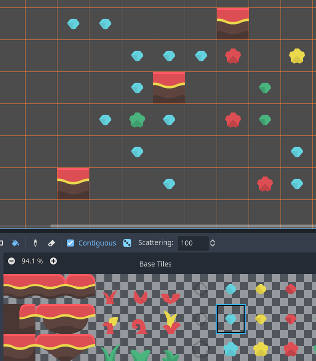
Dùng công cụ Bucket Fill với một tile duy nhất, nhưng có bật ngẫu nhiên hóa và scattering
Ghi chú
Chế độ Eraser không tính đến ngẫu nhiên hóa và scattering. Tất cả tile trong vùng chọn luôn bị xóa.
Lưu và tải các bố cục tile dựng sẵn bằng pattern
Dù bạn có thể sao chép và dán tile khi ở chế độ Select, bạn có thể muốn lưu các pattern tile dựng sẵn để đặt cùng lúc. Việc này có thể thực hiện riêng cho từng TileMap bằng cách chọn tab Patterns của trình chỉnh sửa TileMap.
Để tạo một pattern mới, hãy chuyển sang chế độ Select, thực hiện chọn và nhấn Ctrl + C. Nhấp vào khoảng trống trong tab Patterns (một hình chữ nhật focus màu xanh sẽ xuất hiện quanh khoảng trống), rồi nhấn Ctrl + V:
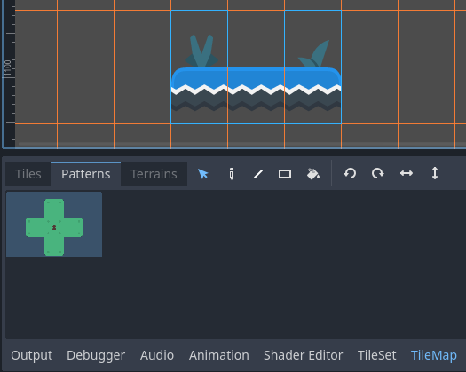
Tạo một pattern mới từ vùng chọn trong trình chỉnh sửa TileMap
Để dùng một pattern có sẵn, hãy nhấp vào hình của nó trong tab Patterns, chuyển sang bất kỳ chế độ vẽ nào, rồi nhấp chuột trái vào đâu đó trong trình chỉnh sửa 2D:
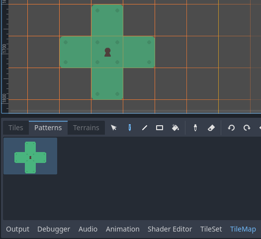
Đặt một pattern có sẵn bằng trình chỉnh sửa TileMap
Giống như vùng chọn nhiều tile, pattern sẽ được lặp lại nếu dùng với các chế độ vẽ Line, Rectangle hoặc Bucket Fill.
Ghi chú
Mặc dù được chỉnh sửa trong trình chỉnh sửa TileMap, pattern được lưu trong resource TileSet. Điều này cho phép dùng lại pattern trong các node TileMapLayer khác nhau sau khi tải một resource TileSet đã được lưu ra tệp bên ngoài.
Tự động xử lý kết nối tile bằng terrain
Để dùng terrain, node TileMapLayer phải có ít nhất một terrain set và một terrain trong terrain set đó. Xem Tạo terrain set (autotiling) nếu bạn chưa tạo terrain set cho TileSet.
Có 3 loại chế độ vẽ dành cho kết nối terrain:
Connect, trong đó các tile được kết nối với các tile xung quanh trên cùng TileMapLayer.
Path, trong đó các tile được kết nối với các tile được vẽ trong cùng một nét vẽ (cho đến khi nhả nút chuột).
Ghi đè theo từng tile để giải quyết xung đột hoặc xử lý các tình huống mà hệ thống terrain không bao quát.
Chế độ Connect dễ dùng hơn, nhưng Path linh hoạt hơn vì cho phép người vẽ kiểm soát nhiều hơn trong khi vẽ. Ví dụ, Path có thể cho phép hai con đường nằm sát nhau mà không kết nối với nhau, trong khi Connect sẽ buộc cả hai con đường phải kết nối.
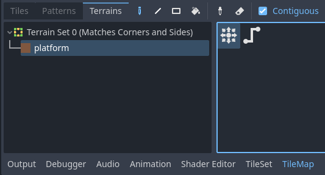
Chọn chế độ Connect trong tab Terrains của trình chỉnh sửa TileMap
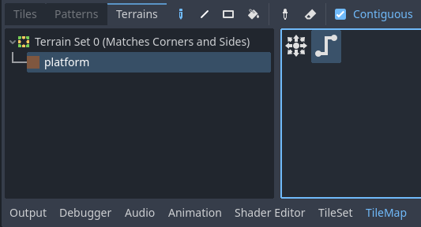
Chọn chế độ Path trong tab Terrains của trình chỉnh sửa TileMap
Cuối cùng, bạn có thể chọn các tile cụ thể từ terrain để giải quyết xung đột trong một số tình huống:
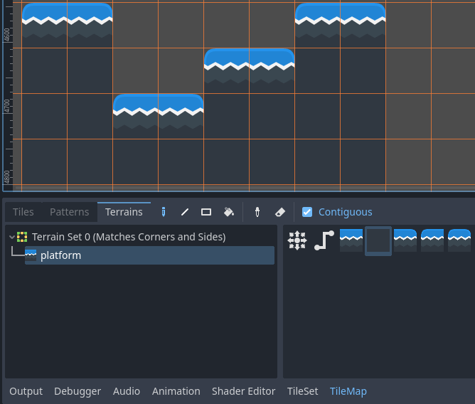
Vẽ bằng các tile cụ thể trong tab Terrains của trình chỉnh sửa TileMap
Bất kỳ tile nào có ít nhất một bit được đặt thành giá trị bằng ID terrain tương ứng sẽ xuất hiện trong danh sách tile để chọn.
Xử lý tile bị thiếu
Nếu bạn xóa các tile trong TileSet đang được tham chiếu trong một TileMap, TileMap sẽ hiển thị một placeholder để cho biết có một ID tile không hợp lệ đã được đặt:
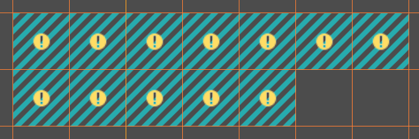
Tile bị thiếu trong trình chỉnh sửa TileMap do tham chiếu TileSet bị hỏng
Các placeholder này không hiển thị khi chạy dự án, nhưng dữ liệu tile vẫn được lưu xuống đĩa. Nhờ đó bạn có thể đóng và mở lại các scene như vậy một cách an toàn. Khi bạn thêm lại một tile có ID khớp, các tile sẽ xuất hiện với hình dạng của tile mới.
Ghi chú
Placeholder của tile bị thiếu có thể sẽ không hiển thị cho đến khi bạn chọn node TileMapLayer và mở trình chỉnh sửa TileMap.